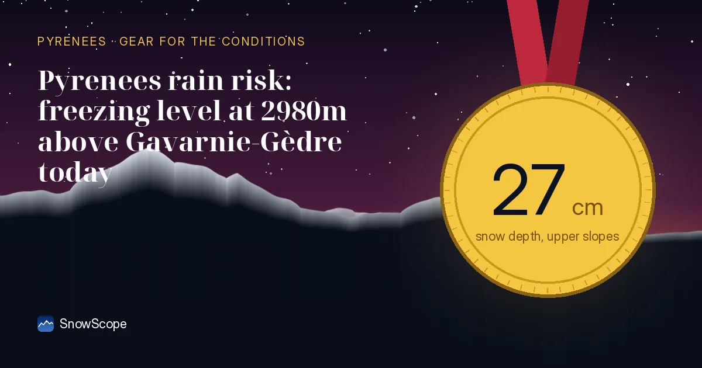
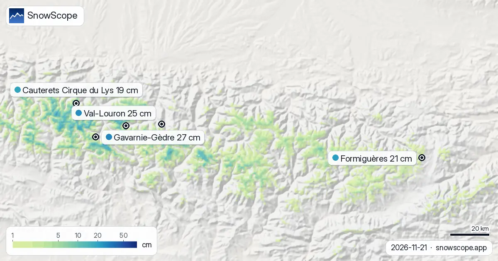
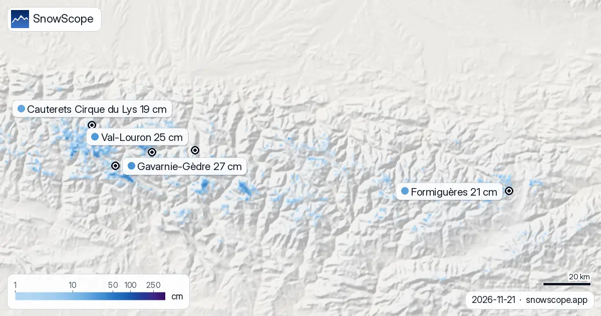

Pyrenees rain risk: freezing level at 2980m above Gavarnie-Gèdre today
Rain is falling above the summit of Gavarnie-Gèdre today, with the freezing level at 2980 m well above the top lift at 2283 m. Over the next three days, however, cold air moves in and snow will return across the Pyrenees—a sharp shift that changes what you need to bring.
See the live snow forecast for Gavarnie-Gèdre in the SnowScope appSnow depth, powder alerts and the 3D map, free.
Today: rain and thin snow at high altitude
Right now, the freezing level sits at 2980 m, which means rain is falling on the highest slopes of Gavarnie-Gèdre. Upper slopes hold only 27 cm of snow, so any rain will percolate through to the base and form a crust. Val-Louron and Formiguères face the same risk: both have thin snow cover (25 cm and 21 cm) and freezing levels well above their summits today.
In the last 24 hours, Gavarnie-Gèdre received 4 cm of new snow, but temperatures are too warm for it to stay dry. The water flowing through that thin snowpack will drain quickly downslope and feed the streams below—this is early-season snow that acts as a temporary store before most of it runs off.
| Resort | Snow depth | New snow, 72 h | Coming, next days | Top |
|---|---|---|---|---|
| Gavarnie-Gèdre | 27 cm | 7 cm | 14 cm | 2,283 m |
| Val-Louron | 25 cm | 2 cm | 5 cm | 2,071 m |
| Formiguères | 21 cm | 3 cm | 6 cm | 2,305 m |
| Cauterets Cirque du Lys | 19 cm | 13 cm | 17 cm | 2,420 m |
| Piau-Engaly | 16 cm | 13 cm | 15 cm | 2,527 m |

What changes in the next two days
By tomorrow, 22 November, the freezing level drops to 2090 m at Gavarnie-Gèdre, and by the 23rd it falls further to 1990 m. Cold air is replacing the warm, wet pattern. Snow will start to accumulate again: Gavarnie-Gèdre is forecast to receive 14 cm over the next three days, while Cauterets Cirque du Lys and Piau-Engaly are both expected to gain 15-17 cm.
This contrast is crucial for planning your gear. Today you are dealing with crust and melt; in 48 hours, you are dealing with fresh snow on a firmer base. The Pyrenees will shift from a water-rich system to a cold-storage system almost overnight.

Deepest snow is at the highest resorts
Piau-Engaly and Cauterets Cirque du Lys sit higher than Gavarnie-Gèdre, yet both have less snow on their upper slopes today: 16 cm and 19 cm respectively. The reason is terrain and exposure—these resorts face different wind patterns and slope angles, so snow accumulates less. By contrast, Gavarnie-Gèdre has better protected slopes and 27 cm at the top.
Even so, all five main resorts with recorded data are thin on top today. Formiguères, the shallowest at 21 cm, risks bare ground on steep terrain. When the snow arrives over the next three days, it will spread coverage but not build depth overnight.
What to bring: layers, edges and patience
For today, bring hard-edged skis or a board that holds an edge on crust. Wear a water-resistant shell on top—not waterproof, which traps sweat—and merino base layers that dry quickly if you get wet. Goggles with a rose or amber lens cut through the flat light of rain-cloud conditions.
Pack a scraper or small shovel. If you venture off-piste, rocks are likely beneath thin snow cover, so wide powder skis are risky. Consult the official avalanche bulletin for your area before leaving the piste.
In three days' time, you will want powder skis or a wider base, insulated gloves, and a warm mid-layer you can keep on. The snow will be fresh and cool. The transition happens fast—this is not a gradual change but a system flip.
Snow coverage recovering by week's end
Today, 39 out of 53 resorts in the Pyrenees have snow on the ground, covering 1360 square km. Two days ago, the covered area was larger at 2290 square km, because the snowline has risen with the warm spell. By 24 November, it rebounds: our snow model forecasts 5210 square km covered and 47 resorts with skiable snow.
This recovery is real and significant. The region is not heading into a drought; it is in a brief warm phase that will break within days. Early-season snow is thin and prone to melt, but it is also the foundation. Store water in those high peaks now, and by late November the Pyrenees will have a usable base again.
Tips for skiers
- Wear a wind-resistant shell today; rain is falling above 2980 m, and melt-freeze crust is forming on upper slopes. Tomorrow the temperature drops—switch to insulated layers.
- Use hard edges today on Gavarnie-Gèdre, Val-Louron and Formiguères. Rock hazard is high with less than 30 cm on top. Stay on-piste or consult the avalanche bulletin.
- In two days, fresh snow returns (14-17 cm forecast). Bring powder skis then, not carving skis. The conditions swap from crust to soft overnight.
- Piau-Engaly and Cauterets Cirque du Lys are higher but thinner today (16-19 cm). Gavarnie-Gèdre offers better coverage at 27 cm upper slopes if you want to ski today.
- Bring ski goggles with a rose lens for today's flat light and visibility through rain. Tomorrow, amber or clear works better as the air clears.
About these numbers
Resort snow depths are the deepest snow on the resort's upper slopes from the SnowScope snow model (about 1 km, run of 21 November); they are estimates for an area, not a measurement at one point. Station values are measurements on the date shown. Forecasts can change. Always read the official avalanche bulletin before going off-piste.
Official avalanche bulletins: Météo-France / Meteocat / AEMET
Cite this report
For research, teaching or the press: the numbers and charts are free to reuse under CC BY 4.0 with this citation.
SnowScope (2026), Pyrenees rain risk: freezing level at 2980m above Gavarnie-Gèdre today, https://snowscope.app/blog/en/2026/11/pyrenees-what-to-bring-ski-gear-conditions-21-november-2026.html, accessed 2026-11-21
SnowScope (Atlas Labs). (2026, November 21). Pyrenees rain risk: freezing level at 2980m above Gavarnie-Gèdre today. SnowScope snow reports. https://snowscope.app/blog/en/2026/11/pyrenees-what-to-bring-ski-gear-conditions-21-november-2026.html
BibTeX
@misc{snowscope2026pyreneeswhattobringskige,
author = {{SnowScope (Atlas Labs)}},
title = {Pyrenees rain risk: freezing level at 2980m above Gavarnie-Gèdre today},
year = {2026},
month = nov,
howpublished = {\url{https://snowscope.app/blog/en/2026/11/pyrenees-what-to-bring-ski-gear-conditions-21-november-2026.html}},
note = {Published 2026-11-21 12:47 UTC; accessed 2026-11-21}
}· CC BY 4.0 · Methods, data and tools →
Gavarnie-Gèdre: snow and temperature by height, this winter vs last (tools) →
Follow Gavarnie-Gèdre
Free: a message when fresh snow is coming, and the forecast every morning.
More snow reports

Cauterets offers 25 km of runs for 46 EUR, but our snow history shows that the best chance for cover is the last week of December.

Piau-Engaly leads the forecast with 37 cm of new snow by 13 November; 24 cm is expected on 12 November.

Compare Grandvalira and Spanish resorts in December 2026 for snow depths, lift heights, and prices starting from 49.00 EUR.